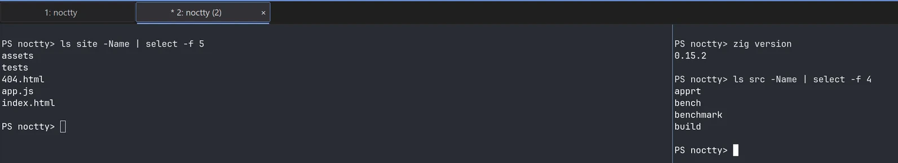

Session restoration
Close Noctty and open it again to the same windows, tabs, and split layout. Working directories, profiles, and explicit titles come back with them, so a restart costs you the reopen, not the rebuild.
- Layout, working directories, and titles restore on launch
- Per-profile shells: PowerShell, cmd, Git Bash, opt-in WSL
- Pane contents return as clearly-marked snapshots
